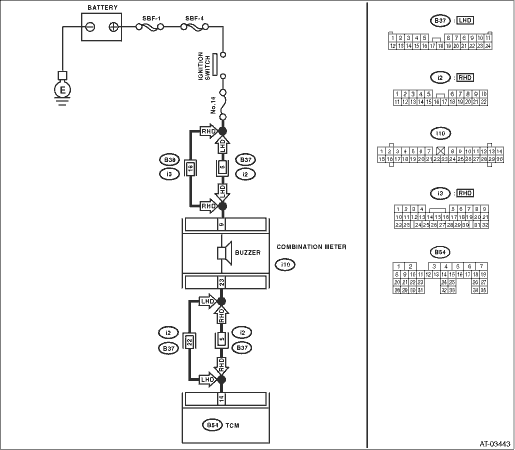

DIAGNOSIS:
Output signal circuit of buzzer is open or shorted.
TROUBLE SYMPTOM:
Buzzer remains beeping.
WIRING DIAGRAM:


| STEP | CHECK | YES | NO |
|
Is the resistance 1 MΩ or more? |
|
Repair short circuit of harness between TCM and combination meter connector. |
|
|
Does the buzzer sound? |
Replace the combination meter. |
|
|
|
Is there poor contact in buzzer circuit? |
Repair the poor contact. |
Replace the TCM. |